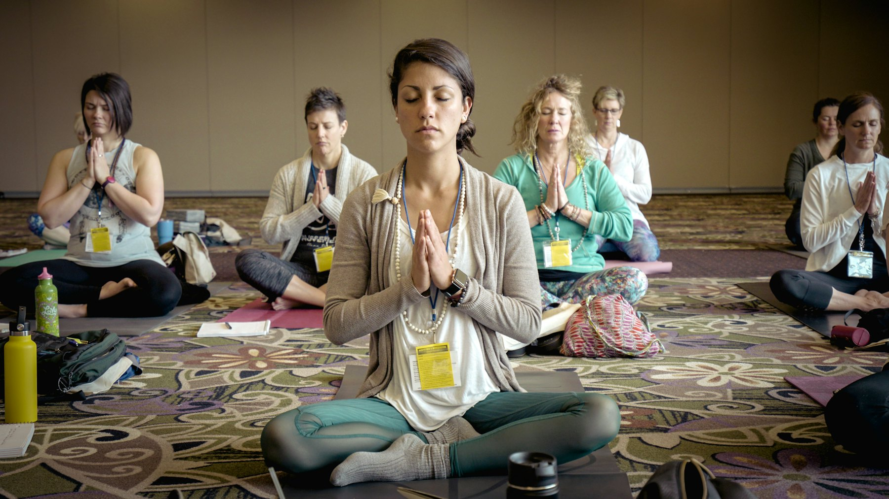
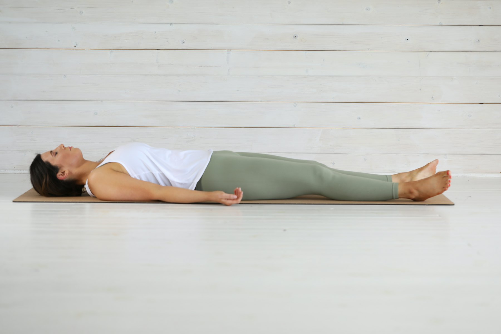

Wat is yoga, en voor wie?
Een oeroude wetenschap die je de middelen geeft om zelf zorg te dragen voor je lichamelijke, geestelijke en spirituele welzijn.

Terug naar je ware natuur
Yoga gaat ervan uit dat we allemaal lijden aan vereenzelviging: we denken dat we ons lichaam zijn, of onze geest. Daardoor lijden we aan allerlei kwalen, zowel lichamelijke als psychische.
Yoga probeert die verstoring te doorbreken en ons terug te brengen tot onze ware natuur. Praktisch gezien streeft echte yoga naar één ding: het vermogen om altijd kalm en evenwichtig te zijn.
“Het doel van yoga is de mens te herstellen in zijn oorspronkelijke staat van volmaakte zaligheid.”
Swami Chidananda
Hoe doen we dat?
We ontspannen lichaam en geest volledig, om ruimte te geven aan wie we echt zijn. Wie de fysieke spanning wegwerkt, ziet de psychische spanning vanzelf afnemen. Dat eenvoudige principe is ook wetenschappelijk aangetoond.
Alle oefeningen zijn uiteindelijk een middel: je leert lichaam en geest loslaten, om via concentratie en meditatie tot innerlijke rust te komen. Elke les bestaat uit vier delen.
Lichaamsoefeningen en houdingen
We werken de spanning in het lichaam weg. De spanning in je hoofd neemt vanzelf mee af.
Ademhaling
Aandacht voor de adem tijdens elke oefening, en aparte ademhalingsoefeningen die het zenuwstelsel versterken.
Diepe ontspanning
Van buiten naar binnen: lichaam en geest ontspannen tot in hun diepere lagen.
Concentratie en meditatie
Leren loslaten, om tot innerlijke rust en vrede te komen.

Yoga is geschikt voor iedereen.
De meeste oefeningen zijn eenvoudig. Jong of oud, ieder met zijn eigen beperkingen doet ze op een aangepaste manier.
Yoga wordt vaak nogal acrobatisch voorgesteld. Bij ons is het eerder eenvoudig: niet op je hoofd leren staan, maar op je beide voeten.
Kom een les proberen.
In september kun je een proefles volgen, zolang er plaats is. Die kost € 6, te betalen aan de lesgever. Schrijf je daarna in, dan vervalt dat bedrag.
Proefles aanvragen